NAKAMICHI（ナカミチ）
1958年設立のカセットデッキ等で知られたオーディオメーカー。
1948年に故 中道悦郎氏が始めた個人研究所が母体であり、1950年に前身である千代田理研�鰍�設立し、「マジックトーン」ブランドでオープンリールテープレコーダーを発売、1958年に�樺�道研究所が設立され、研究開発、各所からの受託を中心にスタートした。1964年に自社ブランド「フィデラ」をスタートしたが、主体はあくまで研究開発、OEM受託であった。1969年にはKLH社、ドルビー社と共同でドルビーＢノイズリダクションを開発、1970年代初頭にはアメリカのカセットデッキのシェアの７割がナカミチが開発した製品で占められた。
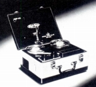 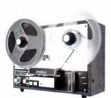 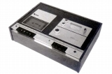
（左 Magic Tone 中央 FIDELA-807 右 OEM開発・製造した米国・アドベントのADVENT200)
現在知られている「ナカミチ」ブランドがスタートしたのは1973年からであり、最初の製品はカセットデッキ史上に残る名機「1000」であった。その後、数多くのカセットデッキの名機を開発した。
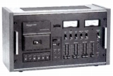
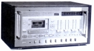
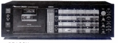
（左 1000 中央 1000ZXL Limited 右 DRAGON)
さらにポータブルデッキからスタートした高品位のカーオーディオでも知られ、車載用のDAコンバーターまで出していた。またアナログプレーヤーやDAT、CDプレイヤー等でも他社にないメカニズムの製品を作っていた。中でもMusicBankと呼ぶコンパクトなCDチェンジャー機構は、CDショップの誌聴機で生かされていた。
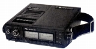
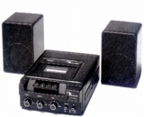
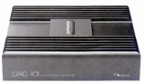
（左 スティビー・ワンダーが愛用したとされる550 中央 カーステレオ用も考慮された250 右 車載用DAC DAC-101)
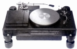
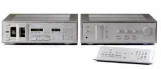
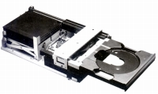
（左 レコードの偏芯を補正するTX-1000 中央 DATのNakamichi1000とデジタルプロセッサーNakamichi1000ｐ 右 ミュージックバンクシステム)
1984年に東証2部に上場し、1980年代末までは盛んに新製品を発売していたが、1990年代に入り衰退し、会社としては2000年代に実質破綻、2008年5月末をもって、国内のホームオーディオからは完全に撤退している。近年はＣＤ誌聴機やそのセットとなるヘッドフォンを販売していた。
過去においても、録音モニター用途の為か、ヘッドフォンを販売していたことがある。
HF-100

■価格 8,000円
■型式 ダイナミック型
■振動板
■インピーダンス 8Ω
■再生周波数帯域 20-20,000Hz
■許容入力 500mW
■感度 90ｄB
SPL/mW
■コード
■重量
■発売 1977年頃
■販売終了 1981年頃
■備考
SP-7

■価格 9,800円
■型式 ダイナミック型オープンタイプ
■振動板 40.5�o 25ミクロン ポリエステル膜
■インピーダンス 45Ω
■再生周波数帯域 20-20,000Hz
■許容入力 100mW
■感度 98ｄB/mW
■コード 3m
■重量 150g（コード含まず）
■発売 1982年9月
■販売終了 1993〜94年頃
■備考 スペアイヤパッド付
＊SP-K300について
ナカミチのヘッドフォンで一番見かける機会が多いのが、同社のＣＤ誌聴機とコンビを組むSP-K300である。SP-K300は2002年2月1日より、同社のオンラインショップで14,000円（税抜き)で販売された。
しかし同社のＣＤ誌聴機は以前からあり、付属品としてSP-K300というヘッドフォンは2000年以前から存在した。管理人の手元にある資料では1996年3月発売の3連装モデルMB-V300Pに付属していた。MB-V300Pは本体・ACアダプター・ヘッドフォンハンガー・ヘッドフォンのセットで定価\83,000で販売していたが、ヘッドフォンレスの機体（MB-V300）の販売も行っており、一方で専用ヘッドフォンも\10,000で販売していた。「300」という型番からみて、SP-K300はMB-V300Pとセットで開発された公算が高い。一般にベースとなったとされるテクニカのヘッドフォンも前年の1995年には登場している。同様のモデルとしては7連装モデルMB−K７００Ｈの付属ヘッドフォンSP-K700がある。このモデルもやはり単独販売されていたらしい。
ネット販売したものと価格が違うが、厳しくなりつつあった業績を反映しての値上げか、内容の変更による値上げかは不明。
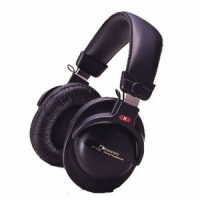
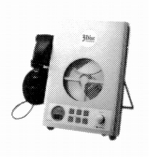
（左 SP-K300 右 MB-V300P 他にもMB-K1000(10枚連装機）などにも付属してようだ）